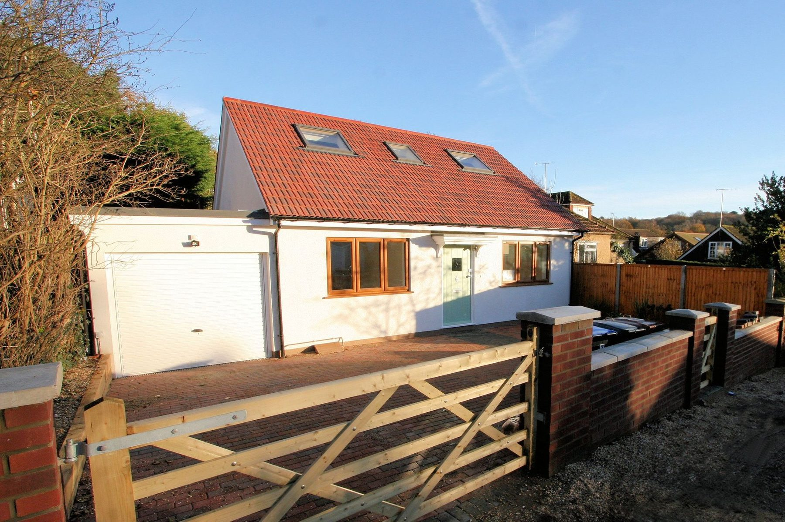
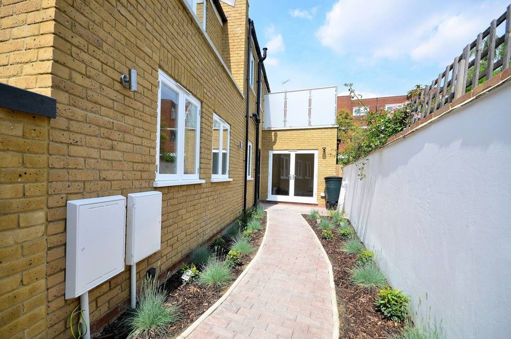
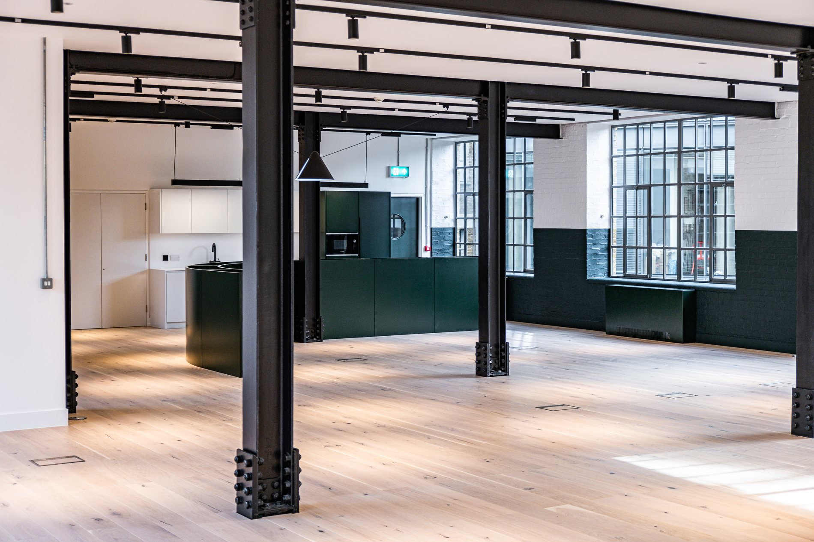
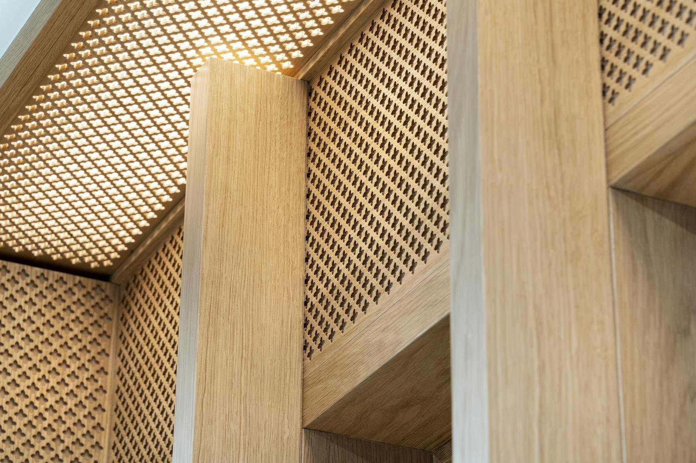

Our services
Six disciplines. One standard.
From first drawing to final polish — construction, refurbishment, fit-out and the specialist trades that make them exceptional.

Design & Build
One contract, from concept to keys
Architecture, engineering, costing and construction under a single point of responsibility.
When design and construction share one table, problems are solved on paper — where they are cheap — instead of on site, where they are not. Our design & build route gives you a fixed team, a clear programme and a single accountable voice from feasibility to handover.
- Feasibility & concept design. Honest advice on what your site, budget and planning context can support.
- Coordinated technical design. Structure, services and joinery drawn together — not discovered on site.
- Fixed-point accountability. One contract, one director-level contact, no gaps between consultants.

Residential Construction
Homes built to be lived in
New builds, extensions and whole-house transformations across London and Hertfordshire.
A home is the most demanding brief in construction: it has to be beautiful, practical and finished to a standard you will inspect every day. We build for clients who notice — quietly managed sites, respectful teams and finishes that reward a second look.
- New builds & extensions. From concrete frame to final coat of paint.
- Whole-house refurbishment. Structural alterations, reconfiguration and full interior finishing.
- Considerate site management. Clean, secure, neighbour-aware sites — even in tight urban streets.

Commercial Fit-Out
Workspaces delivered to programme
Offices, retail and hospitality — built around your opening date, finished like a private residence.
Commercial projects live or die by the programme. We plan backwards from your opening day, sequence trades to overlap safely, and hold finish quality to the same standard we bring to high-end homes — because your space is your brand.
- CAT A & CAT B fit-out. From landlord-ready shells to fully branded environments.
- Compliance built in. Fire-stopping, building control and H&S documentation handled as part of the job, not after it.
- Phased & occupied working. Live environments kept safe, clean and operational.

Refurbishment & Restoration
Old buildings, new life
Period properties and tired interiors brought back with respect for what made them worth keeping.
Refurbishment is where craft is tested: nothing is square, nothing is standard, and every junction is a judgement call. We keep original character where it matters, renew performance where it counts, and make the new work indistinguishable from the old.
- Period & heritage properties. Sensitive repair and faithful replication of original details.
- Structural alterations. Openings, steels and reconfigurations engineered and executed cleanly.
- Performance upgrades. Insulation, glazing, services — comfort without visual compromise.

Bespoke Joinery
Made in our own workshop
Staircases, wardrobes, panelling and doors — drawn, cut, sprayed and fitted by the same team.
Joinery is where Skylon began, and it is still the heart of the company. Because our workshop and spray facility are our own, we control every step: timber selection, machining, finishing and installation — with no translation loss between designer and maker.
- Staircases & balustrades. Sculptural centrepieces engineered to whisper, not creak.
- Fitted furniture & panelling. Wardrobes, libraries and wall treatments scribed to the millimetre.
- Factory-sprayed finishes. Durable, flawless surfaces from our own spray shop.

Electrical & M&E Coordination
Services planned with the architecture
Power, lighting and mechanical services designed into the building — not fought into it afterwards.
Beautiful spaces are ruined by clumsy services. Our electrical teams work from the same drawings as our joiners and decorators, so switch plates align with panelling, lighting grazes where it should, and access panels disappear into the design.
- Full electrical installation. Design, first fix, second fix, testing and certification.
- Lighting that serves design. Positions coordinated with joinery, art and architecture.
- M&E coordination. Mechanical and electrical services sequenced with the build programme.
Why it works
Six trades. One drawing set. One conversation. Zero excuses.
Common questions
Before you ask
Do you take on both residential and commercial projects?
Yes. Our core team moves between high-end residential and commercial fit-out — the disciplines sharpen each other. Residential teaches finish obsession; commercial teaches programme discipline. Your project benefits from both.
Can you work with our architect or designer?
Absolutely. We regularly build from architects’ drawings and collaborate closely through the technical design stage. Equally, our design & build route can carry a project from concept if you prefer a single point of responsibility.
What areas do you cover?
London and Hertfordshire, with our head office in St Albans and our joinery workshop supplying projects across the region. For exceptional projects further afield, talk to us.
How do we get a price?
Start with a conversation. We’ll review your drawings or visit the site, then provide a clear, itemised proposal — costs, programme and assumptions in plain English, so you can compare like with like.
Start a conversation
Let’s build something worth keeping.
Tell us about your site, your building or your idea — we’ll respond within one working day.